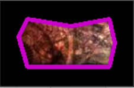
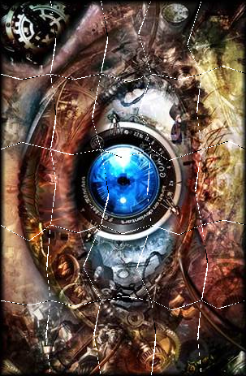

Putting together a jigsaw puzzle is a familiar task for many people. I myself have put together many throughout my life, the most recent time being when I was stuck at home during quarantine. While slowly putting together the 2000+ pieces, I noticed how algorithmic my approach was. I first sorted the pieces whether the pieces were a corner, edge, or interior piece. Then I sorted each set by color, which made finding the next piece in the puzzle much quicker. After a long 2 weeks of putting it together, I realized that I cold have programmed a script to solve the puzzle in a shorter time than it took me to put it together. And thus, the inspiration of this project was born.
While researching the problem, I came across a variety of techniques. The general approach is as follows: For each piece, detect and process the edges and use that information to guide the algorithm to determine which pieces fit together. The algorithm uses both spatial and color features, which are detailed in a later section, to determine how well two edges will fit. Finally, given each piece's location, they are stitched together to create original image. Note that there is no use of a reference image, meaning that the approach could be extended beyond jigsaw puzzles.
These are the main goals I wanted to achieve by the end of this semester
I also would like to reach these goals working on this project in the future
Since I wanted to simplify the pieces to make estimating edge features simpler, I needed to somehow gather puzzles that met my criteria. To do so, I wrote a sript to generate a puzzle from an image that met my criteria. It creates a grid on the image then warps the intersections to create random pieces.
Each 3x3 section of points corresponds to a piece, with the middle point not having an effect on the shape of the piece. Also, notice each corner of the piece has not been randomized, which is extremely important for detecting the edges of the pieces when solving the puzzle. Since the algorithm is designed to be rotationally invariant, there must be some way to determine which points are the corners of the piece. In this case, the corners are all create right angles.
To get all of the key points on the piece, canny edge detection is used to determine the largest contour in the image. This step assumes the the photo of the piece was taken on a solid background that contrasts with the edges of the piece well. For physical pieces, a good way to get this result is to use a piece of paper or cloth under the pieces. Once the contour of the piece has been found, polygon approximation is used to ensure there are no extra points. This polygon is used to create a mask for the piece, which is used when stitching the pieces together as well as replacing the background for further analysis steps.
purple lines connecting key points
Now it is necessary to find the corner points of the piece. Using the fact that the corners all are at right angles from each other, cycle through the points to find ones that create a rectangle. The corner points are also used to determine if the piece is skewed or not. If it is, rotate it so the top line is parallel with the x-axis and repeat the canny edge detection step.
lavender lines connecting corner points
In order to determine which edges are on which side of the piece, order the corner points clockwise. Now, using hte top left corner,
it is possible to order all points clockwise, starting from the top left corner by cycling the array of points. This is possible because
the points are already sorted counterclockwise starting from an arbitrary point.
Now that points are in order, it is possible to collect edge features. All collected features are described below:
All of a pieces edges are stored in an object representing the piece, which also keeps track of whether the piece is a corner, edge, or interior piece based on the number of edges.
The final step of analysis is running kmeans on every edge's color to create k "buckets" that the edges are sorted into. Once all pieces have been analyzed, the edges are categorized into certain sets and subsets. The set hierarchy is as follows:
The solution to the puzzle begins with a corner piece which serves as the top left corner of the puzzle. Again, since this method is rotationally invariant, the corner does not have to be the top left corner, it will just result in a rotated version of the image. All pieces are rotated to correctly connext with the previous piece. From the corner, the next piece to the right is found based on assigning a score to each piece with the same edge type, piece type, and color bin. This score makes use of all edge features that were collected earlier. The gist is that the difference between each edge feature is found and summed, though some differences are scaled differently. Additionally, if a certain distance is small, it halves the "score" for that feature. If all features are small, the color score is greatly reduced, since the color score is most impactful for determinng the correct edge and varies the most. The correct piece is the one with the maximum score, though if a good fit is not found in the same bin as the previous edge, then edges in all color bins are checked. The algorithm goes to the next row when a piece with a flat edge on the right side is found (after it has been rotated of course!). When going to the next row, the best piece is determined similarly as before, only with it only being compared to the edge above it. Furthermore, when a piece is in the interior of the puzzle, it also checks the edge score of the bottom edge of the piece above it with the next edge in the piece clockwise.
Finally, the pieces are stitched together to create the original image. The depth of each edge is accounted for to reduce the size of the gaps between pieces, which proved to be more involved than initially expected. First, stitch the first horizontal strip and then the second. When combining this horizontal strips, get the maximum depth the top edge of all pieces in the strip. This serves as the distance to overlap the images. The result is not perfect, but it is close enough!
Since my solution uses simplified pieces, when there are hundreds of pieces it is not guaranteed that edges with extremely similar features exist. As such, I modified the "create puzzle" functionality to continue generating puzzles until it creates one that is solvable. This obviously greatly increases the time needed to create a puzzle but it was the only way to create puzzles that could be solved wihtout back tracking. Speaking of, I would like to revisit my future goals for the project. I would like to implement back tracking in some way to be able to solve trickier puzzles. This would also likely allow for solving puzzles with many more pieces, since the chances of duplicate edges grows much higher with more pieces.
When the puzzle pieces are created from an image, the piece is a much smaller and lower resolution than the puzzle. So, if too many pieces are created, it becomes impossible to find the key points for the piece. I think this issue would be reduced when using physical pieces since much more detail can be gathered from higher resolution.
Since the pieces are simplified so much, there are fewer unique features that can be gathered. For example, a normal jigsaw piece could add the size of the peg/hole along with the curvature of the segments from the corner to the center. Once I discover how to approximate curves to those types of edges, I would like to experiment with proper jigsaw pieces.
The values I used for kmeans clustering left a lot to be desired. When stepping throuh the algorithm manually, I noticed that it was not as common as I expected to find the correct piece in the corresponding color bin. One way I thought of to alleviate this was to use kmeans again on the edge to determine the dominant color of the edge. However, I did not end up using this idea since it was not trivial to get the color values of the points neat the peg/hole. When I move to normal jigsaw pieces, I will likely employ this strategy so I left the function in the code even though it is unused at the moment.
When researching the problem last summer I did come across some methods, but they typically used brute force to find the correct piece. I wanted to extend those ideas to search for the best fit faster. One interesting method did use edge metrics, though mainly peg/hole and color matching, as well as only being tested on very small pieces. During my searching, I also found a very interesting solution that used a genetic algorithm to accurately solve massive puzzles of thousands of pieces. It used square rather than pieces and did not match my criteria of a human-like solution, but it was interesting regardless.